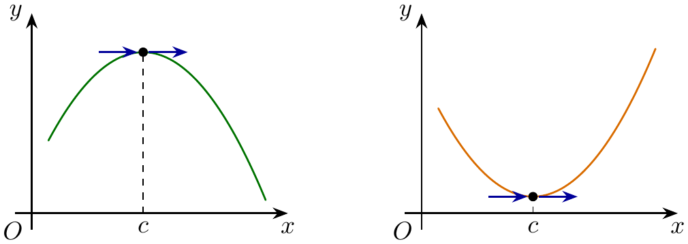
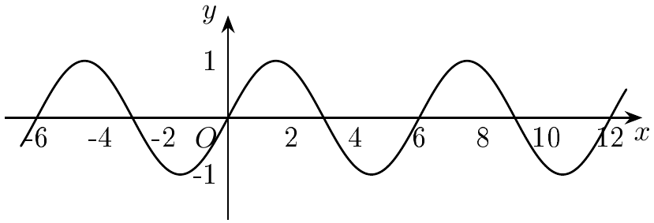
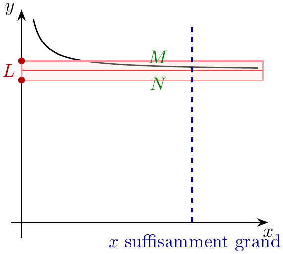
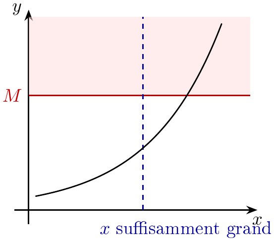
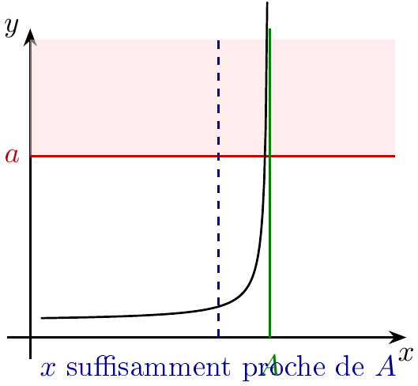
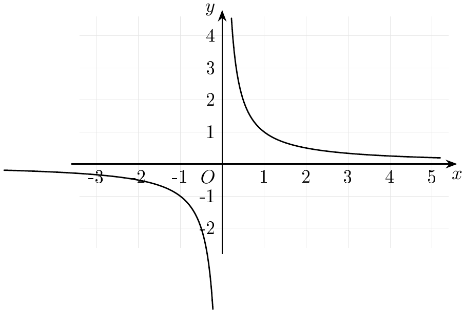

Les fonctions – limites
Terminale complémentaire · Chapitre 2 - Les fonctions - limites · cours de Frederik de Peyrelongue
I. Rappels sur la dérivation
Le nombre dérivé $f'(a)$ de la fonction $f$ en un point $M\bigl(a\,;f(a)\bigr)$ correspond à la pente de la tangente à la courbe au point $M$.
L'équation de la tangente au point $A\bigl(a\,;f(a)\bigr)$ :
I.1 Les fonctions dérivées de référence
| Fonction $f$ définie par : | Ensemble de définition $\mathcal{D}_{f}$ | Fonction dérivée $f'$ définie par : | Ensemble de dérivabilité $\mathcal{D}_{f'}$ | |
| 1. | $f(x)=k$, avec $k\in\R$ | $\R$ | $f'(x)=0$ | $\R$ |
| 2. | $f(x)=mx+p$, avec $m$ et $p$ réels | $\R$ | $f'(x)=m$ | $\R$ |
| 3. | $f(x)=x^{2}$ | $\R$ | $f'(x)=2x$ | $\R$ |
| 4. | $f(x)=x^{n}$, avec $n\in\N^{*}$ | $\R$ | $f'(x)=nx^{n-1}$ | $\R$ |
| 5. | $f(x)=\dfrac{1}{x}$ | $\R\setminus\{0\}$ | $f'(x)=-\dfrac{1}{x^{2}}$ | $\R\setminus\{0\}$ |
| 6. | $f(x)=\dfrac{1}{x^{n}}$ avec $n\in\N^{*}$ | $\R\setminus\{0\}$ | $f'(x)=-\dfrac{n}{x^{n+1}}$ | $\R\setminus\{0\}$ |
| 7. | $f(x)=\sqrt{x}$ | $[0\,;+\infty[$ | $f'(x)=\dfrac{1}{2\sqrt{x}}$ | $]0\,;+\infty[$ |
| 8. | $f(x)=\e^{x}$ | $\R$ | $f'(x)=\e^{x}$ | $\R$ |
I.2 Opérations sur les fonctions dérivées
| Type d'opération | Fonction à dériver | Fonction dérivée | |
| 1. | Dérivée d'une somme | $u+v$ | $(u+v)'=u'+v'$ |
| 2. | Dérivée d'un produit par une constante | $k\times u$ | $(k\times u)'=k\times u'$ |
| 3. | Dérivée d'un produit | $u\times v$ | $(u\times v)'=u'\times v+u\times v'$ |
| 4. | Dérivée d'un inverse | $\dfrac{1}{v}$ avec $v(x)\neq 0$ pour tout $x\in I$ | $\left(\dfrac{1}{v}\right)'=\dfrac{-v'}{v^{2}}$ |
| 5. | Dérivée d'un quotient | $\dfrac{u}{v}$ avec $v(x)\neq 0$ pour tout $x\in I$ | $\left(\dfrac{u}{v}\right)'=\dfrac{u'\times v-u\times v'}{v^{2}}$ |
| 6. | Dérivée de $f(x)=g(ax+b)$, avec $a\neq 0$ : soit $I$ l'intervalle tel que, pour tout $x\in I$, $ax+b\in J$. La fonction $f$ est définie et dérivable sur $J$ et $f'(x)=a\times g'(ax+b)$. |
I.3 Sens de variation, extremum local et dérivée
$f$ est une fonction dérivable sur un intervalle $I$.
Si, pour tout réel $x$ de $I$, $f'(x)>0$ sauf en un nombre fini de points où elle s'annule, alors la fonction $f$ est strictement croissante sur $I$.
Si, pour tout réel $x$ de $I$, $f'(x)<0$ sauf en un nombre fini de points où elle s'annule, alors la fonction $f$ est strictement décroissante sur $I$.
La fonction $f$ est une fonction dérivable sur un intervalle ouvert $I$ et $c\in I$.
Si $f'$ s'annule et change de signe en $c$, alors $f(c)$ est un extremum local de $I$.

II. Limite d'une fonction à l'infini
II.1 Fonction sans limite à l'infini
Il existe des fonctions qui ne possèdent pas de limite infinie. C'est le cas des fonctions sinusoïdales.

II.2 Limite finie à l'infini
On dit que la fonction $f$ admet pour limite $L$ en $+\infty$ si tout intervalle ouvert contenant $L$ contient toutes les valeurs de $f(x)$ dès que $x$ est suffisamment grand ; on note :
- La droite d'équation $y=L$ est asymptote horizontale à la courbe représentative de la fonction $f$ en $+\infty$ si $\limx{x}{+\infty} f(x)=L$.
- La droite d'équation $y=L$ est asymptote horizontale à la courbe représentative de la fonction $f$ en $-\infty$ si $\limx{x}{-\infty} f(x)=L$.

Remarque : lorsque $x$ tend vers $+\infty$, la courbe de la fonction « se rapproche » de son asymptote. La distance $MN$ tend vers $0$.
{ex:cinq} Lorsque $x$ devient très grand, la fonction $f$ se rapproche de $5$ de plus en plus, sans le toucher :
Graphiquement, la fonction devient horizontale : on dit que $\mathcal{C}_{f}$ admet une asymptote horizontale au voisinage de $+\infty$.
II.3 Limite infinie en $+\infty$ et $-\infty$
On dit que la fonction $f$ admet pour limite $+\infty$ en $+\infty$ si, pour tout nombre $M$ réel aussi grand soit-il, il existe une valeur de $A$ tel que, pour $x$ supérieur à $A$, on aura $f(x)>M$ ; on note :
On dit que la fonction $f$ admet pour limite $-\infty$ en $+\infty$ si, pour tout nombre $M$ réel aussi négatif soit-il, il existe une valeur de $A$ tel que, pour $x$ supérieur à $A$, on aura $f(x)<M$ ; on note :

{ex:carre} La fonction définie par $f(x)=x^{2}$ a pour limite $+\infty$ lorsque $x$ tend vers $+\infty$.
En effet, les valeurs de la fonction deviennent aussi grandes que l'on souhaite dès que $x$ est suffisamment grand.
Si on prend un réel $a$ quelconque, l'intervalle $]a\,;+\infty[$ contient toutes les valeurs de la fonction dès que $x$ est suffisamment grand.
II.4 Limites des fonctions usuelles
- $\limx{x}{+\infty} x^{2}=+\infty$, $\limx{x}{-\infty} x^{2}=+\infty$ ;
- $\limx{x}{+\infty} x^{3}=+\infty$, $\limx{x}{-\infty} x^{3}=-\infty$ ;
- $\limx{x}{+\infty} x^{n}=+\infty$, $\limx{x}{-\infty} x^{n}=+\infty$ (pour $n$ pair) ;
- $\limx{x}{+\infty} x^{n}=+\infty$, $\limx{x}{-\infty} x^{n}=-\infty$ (pour $n$ impair) ;
- $\limx{x}{+\infty} \sqrt{x}=+\infty$ ;
- $\limx{x}{+\infty} \dfrac{1}{x}=0$, $\limx{x}{-\infty} \dfrac{1}{x}=0$ ;
- $\limx{x}{+\infty} \e^{x}=+\infty$, $\limx{x}{-\infty} \e^{x}=0$.
III. Limite d'une fonction en un réel $A$
III.1 Lorsque la fonction est continue en $A$
Exemple : $f(x)=x^{2}$ : la fonction est continue en $3$ :
III.2 Limite pour un point de discontinuité
Exemple :
La fonction représentée ci-dessous a pour limite $+\infty$ lorsque $x$ tend vers $A$.
En effet, les valeurs de la fonction deviennent aussi grandes que l'on souhaite dès que $x$ est suffisamment proche de $A$.
Si on prend un réel $a$ quelconque, l'intervalle $]a\,;+\infty[$ contient toutes les valeurs de la fonction dès que $x$ est suffisamment proche de $A$.

- On dit que la fonction $f$ admet pour limite $+\infty$ en $A$ si tout intervalle $]a\,;+\infty[$, $a$ réel, contient toutes les valeurs de $f(x)$ dès que $x$ est suffisamment proche de $A$ ; on note : $\limx{x}{A} f(x)=+\infty$.
- On dit que la fonction $f$ admet pour limite $-\infty$ en $A$ si tout intervalle $]-\infty\,;b[$, $b$ réel, contient toutes les valeurs de $f(x)$ dès que $x$ est suffisamment proche de $A$ ; on note : $\limx{x}{A} f(x)=-\infty$.
La droite d'équation $x=A$ est asymptote verticale à la courbe représentative de la fonction $f$ si $\limx{x}{A} f(x)=+\infty$ ou $\limx{x}{A} f(x)=-\infty$.
Remarque :
Certaines fonctions admettent des limites différentes en un réel $A$ selon $x>A$ ou $x<A$.
Considérons la fonction inverse définie sur $\R^{*}$ par $f(x)=\dfrac{1}{x}$.
Si $x<0$ : lorsque $x$ tend vers $0$, $f(x)$ tend vers $-\infty$ ; on note :
\[ \limx{x}{0^{-}} f(x)=-\infty . \]Si $x>0$ : lorsque $x$ tend vers $0$, $f(x)$ tend vers $+\infty$ ; on note :
\[ \limx{x}{0^{+}} f(x)=+\infty . \]
On parle de limite à gauche de 0 et de limite à droite de 0.

IV. Opérations sur les limites
$\alpha$ peut désigner $+\infty$, $-\infty$ ou un nombre réel.
IV.1 Limite d'une somme
| $\limx{x}{\alpha} f(x)=$ | $L$ | $L$ | $L$ | $+\infty$ | $-\infty$ | $+\infty$ |
| $\limx{x}{\alpha} g(x)=$ | $L'$ | $+\infty$ | $-\infty$ | $+\infty$ | $-\infty$ | $-\infty$ |
| $\limx{x}{\alpha} f(x)+g(x)=$ | $L+L'$ | $+\infty$ | $-\infty$ | $+\infty$ | $-\infty$ | F.I.* |
* Forme indéterminée : on ne peut pas prévoir la limite éventuelle.
IV.2 Limite d'un produit
$\infty$ désigne $+\infty$ ou $-\infty$
| $\limx{x}{\alpha} f(x)=$ | $L$ | $L$ | $\infty$ | $0$ |
| $\limx{x}{\alpha} g(x)=$ | $L'$ | $\infty$ | $\infty$ | $\infty$ |
| $\limx{x}{\alpha} f(x)g(x)=$ | $L\,L'$ | $\infty$ | $\infty$ | F.I. |
Exemple : $\limx{x}{-\infty}(x-5)(3+x^{2})$ ?
$\limx{x}{-\infty}(x-5)=-\infty$ et $\limx{x}{-\infty}(3+x^{2})=+\infty$.
D'après la règle sur la limite d'un produit :
IV.3 Limite d'un quotient
$\infty$ désigne $+\infty$ ou $-\infty$
| $\limx{x}{\alpha} f(x)=$ | $L$ | $L\neq 0$ | $L$ | $\infty$ | $\infty$ |
| $\limx{x}{\alpha} g(x)=$ | $L'\neq 0$ | $0$ | $\infty$ | $L$ | $\infty$ |
| $\limx{x}{\alpha} \dfrac{f(x)}{g(x)}=$ | $\dfrac{L}{L'}$ | $\infty$ | $0$ | $\infty$ | F.I. |
On applique la règle des signes pour déterminer si le quotient est $+\infty$ ou $-\infty$.
Exemple : $\limx{x}{3}\dfrac{1-2x}{x-3}$ ?
$\limx{x}{3} 1-2x=-5$.
$\limx{x}{3^{-}} x-3=0^{-}$ et $\limx{x}{3^{+}} x-3=0^{+}$.
D'après la règle sur la limite d'un quotient :
Remarque :
Comme pour les suites, on rappelle que les quatre formes indéterminées sont, par abus d'écriture :
IV.4 Méthode : lever une forme indéterminée sur les fonctions polynômes et rationnelles
Calculer $\displaystyle\limx{x}{+\infty}-3x^{3}+2x^{2}-6x+1$.
On a $\limx{x}{+\infty}-3x^{3}=-\infty$ et $\limx{x}{+\infty}2x^{2}=+\infty$.
On reconnaît une forme indéterminée du type « $\infty-\infty$ ».
Levons l'indétermination par la factorisation par le monôme de plus haut degré :
Or $\limx{x}{+\infty}\dfrac{2}{x}=\limx{x}{+\infty}\dfrac{6}{x^{2}} =\limx{x}{+\infty}\dfrac{1}{x^{3}}=0$.
Donc, par limite d'une somme :
De plus $\limx{x}{+\infty}x^{3}=+\infty$, donc, par limite d'un produit :
Soit :
Calculer $\displaystyle\limx{x}{+\infty}\frac{2x^{2}-5x+1}{6x^{2}-5}$ : c'est une limite de type « $\dfrac{\infty}{\infty}$ ».
Levons l'indétermination en factorisant le plus grand monôme au numérateur et au dénominateur :
Or $\limx{x}{+\infty}\dfrac{5}{x}=\limx{x}{+\infty}\dfrac{1}{x^{2}} =\limx{x}{+\infty}\dfrac{5}{x^{2}}=0$.
Donc, par limite d'une somme :
Donc, par limite d'un quotient :
Soit :
Calculer $\displaystyle\limx{x}{-\infty}\frac{3x^{2}+2}{4x-1}$ : il s'agit d'une forme indéterminée du type « $\dfrac{\infty}{\infty}$ ».
Levons l'indétermination en factorisant le plus grand monôme au numérateur et au dénominateur :
Or $\limx{x}{-\infty}\dfrac{1}{x}=\limx{x}{-\infty}\dfrac{2}{x^{2}}=0$.
Donc, par limite d'une somme :
Donc, par limite d'un quotient :
De plus $\limx{x}{-\infty}x=-\infty$, donc, par limite d'un produit :
Soit :
V. Théorèmes de comparaison et croissances comparées
V.1 Théorème de comparaison
Soient $f$ et $g$ deux fonctions définies au voisinage de $A$ (réel ou infini).
- Si $f(x)\geqslant g(x)$ au voisinage de $A$ et si $\limx{x}{A} g(x)=+\infty$, alors $\limx{x}{A} f(x)=+\infty$.
- Si $f(x)\leqslant g(x)$ au voisinage de $A$ et si $\limx{x}{A} g(x)=-\infty$, alors $\limx{x}{A} f(x)=-\infty$.
On minore (ou majore) la fonction par une fonction plus simple dont on sait calculer la limite, puis on conclut à l'aide du théorème.
On considère la fonction $f$ définie sur $\mathbb{R}$ par $f(x)=x+\sin(x)$. Pour tout réel $x$, on a $-1\leqslant \sin(x)\leqslant 1$, donc
Or $\limx{x}{+\infty}(x-1)=+\infty$. Par comparaison, on en déduit :
De la même manière, $f(x)\leqslant x+1$ et $\limx{x}{-\infty}(x+1)=-\infty$, donc $\limx{x}{-\infty} f(x)=-\infty$.
V.2 Théorème des gendarmes (encadrement)
Soient $f$, $g$ et $h$ trois fonctions définies au voisinage de $A$. Si, au voisinage de $A$,
alors
On encadre la fonction entre deux fonctions qui ont la même limite $\ell$ : la fonction « prise en sandwich » a alors nécessairement pour limite $\ell$.
On considère la fonction $f$ définie sur $\left]0\,;+\infty\right[$ par $f(x)=\dfrac{\sin(x)}{x}$. Pour tout $x>0$, on a $-1\leqslant \sin(x)\leqslant 1$, donc en divisant par $x>0$ :
Or $\limx{x}{+\infty}\left(-\dfrac{1}{x}\right)=0$ et $\limx{x}{+\infty}\dfrac{1}{x}=0$. D'après le théorème des gendarmes :
On considère $f(x)=3+\dfrac{\cos(x)}{x}$ sur $\left]0\,;+\infty\right[$. Comme $-1\leqslant \cos(x)\leqslant 1$, on obtient
Les deux fonctions encadrantes tendent vers $3$ quand $x$ tend vers $+\infty$ ; donc
V.3 Théorèmes de croissances comparées
Au voisinage de $+\infty$, la fonction exponentielle « l'emporte » sur toute puissance de $x$, et toute puissance de $x$ « l'emporte » sur le logarithme :
pour tout entier $n\geqslant 1$. De plus, au voisinage de $-\infty$ :
Pour lever une indétermination du type « $\dfrac{\infty}{\infty}$ » ou « $\infty\times0$ » avec une exponentielle ou un logarithme, on fait apparaître un quotient de la forme $\dfrac{\mathrm{e}^{x}}{x^{n}}$, $\dfrac{x^{n}}{\mathrm{e}^{x}}$ ou $\dfrac{\ln(x)}{x^{n}}$, puis on applique les théorèmes de croissances comparées.
Calculons la limite en $+\infty$ de $f(x)=\dfrac{x+1}{\mathrm{e}^{x}}$. On sépare les deux termes :
Or, par croissances comparées, $\limx{x}{+\infty}\dfrac{x}{\mathrm{e}^{x}}=0$ et $\limx{x}{+\infty}\dfrac{1}{\mathrm{e}^{x}}=0$. Par limite d'une somme :
Calculons la limite en $-\infty$ de $f(x)=(x^{2}+3x)\,\mathrm{e}^{x}$. On factorise par $x^{2}$ :
Or $\limx{x}{-\infty}x^{2}\mathrm{e}^{x}=0$ (croissances comparées) et $\limx{x}{-\infty}\left(1+\dfrac{3}{x}\right)=1$. Par limite d'un produit :
Calculons la limite en $+\infty$ de $f(x)=\dfrac{\ln(x)+2}{x}$. On sépare :
Par croissances comparées, $\limx{x}{+\infty}\dfrac{\ln(x)}{x}=0$, et $\limx{x}{+\infty}\dfrac{2}{x}=0$. Par limite d'une somme :
Attention : les théorèmes de croissances comparées ne dispensent pas de vérifier la forme de l'expression : il faut d'abord transformer l'écriture (factoriser, séparer, diviser) pour faire apparaître un quotient comparable à ceux du théorème.